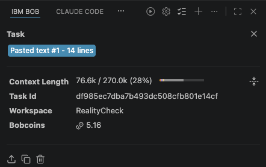

Was the repair justified?
Connect the change to a documented requirement, with a counterexample a developer has accepted.
REALITYCHECK / BUILT WITH IBM BOB
Evidence-backed repair workflows with IBM Bob.
A fix needs a reason. A test needs to stay fixed. A result needs a record. RealityCheck connects all three, from documented requirement to verified repair.
Break your assumptions before deployment does.
"053636""53636"This is the evidence companion. RealityCheck executes inside IBM Bob IDE. This hosted site is a read-only companion for exploring the evidence and verification results generated by the working prototype.
NO BROWSER EXECUTION01 / THE VERIFICATION GAP
Connect the change to a documented requirement, with a counterexample a developer has accepted.
Keep the accepted tests and contract fixed while the application changes underneath them.
Preserve the original failure, the repaired result, and the artifacts behind both.
A green test suite alone does not answer these questions.
02 / THE WORKFLOW
Select a stage to see its responsibility.
This diagram explains the workflow; it does not execute it.
Identify the contract, fixtures, tests, and application boundary. Record the existing test results. Passing examples establish a baseline, not complete contract coverage.
Reads the contract and data notes. Identifies sources, expected behavior, and ambiguities.
Reads application code. Identifies assumptions and possible contract mismatches.
Bob synthesizes a candidate finding. A suspicious conversion alone is not a confirmed defect.
The workflow instructs Bob to stop. A developer reviews the requirement interpretation, counterexample, and candidate regression test before accepting the repair target.
Human decision · not a model verdictHash the accepted contract, tests, fixtures, and verification tooling. The runner checks those protected hashes in later executions. The application is the permitted repair boundary.
Run the accepted tests on the original application. A defect test must fail as expected; a preservation guard may already pass. Setup errors, missing results, and skipped required tests cannot establish a reproduced defect.
Bob repairs the application without changing the accepted definition of success. Before and after application snapshots and the Git diff make the scope reviewable.
Python invokes pytest and records exit codes, exact test identities, structured results, and snapshot hashes. Required checks and the baseline must pass. The verifier produces the bounded verdict.
A reviewer can inspect the requirement, acceptance, original failure, repair, and verification. Historical executions remain separate from later reruns.
Explore the recorded evidence03 / RECORDED CASE STUDIES
A Python + SQLite retail importer.
All counterexamples are synthetic and contract-derived.
The contract treats invoice_no as an opaque string. The original importer removed the leading zero, even though all five existing tests passed.
Preserve the received identifier unchanged through ingestion, storage, and retrieval.
“053636” is a synthetic counterexample, not a row extracted from the UCI dataset.
Inspect RC-001str(int(record["invoice_no"]))str(record["invoice_no"])"053636""053636"exit 1exit 0Replay safety, identity conflicts, and atomic batches interact. The repair must fix the broken behaviors while retaining distinct records with equal business values.
| Accepted requirement | Before repair | After repair |
|---|---|---|
| AC-004Exact replaySame identity, same contents → one stored row | × Failed | ✓ Passed |
| AC-005Identity conflictSame identity, changed contents → error; original preserved | × Failed | ✓ Passed |
| AC-006Distinct identitiesDifferent identities, equal contents → both stored | ✓ Passed · guard | ✓ Preserved |
| AC-007Batch atomicityAny record fails → no new rows from the batch remain | × Failed | ✓ Passed |
A passing test matters, too. AC-006 prevents a “fix” that discards legitimate records merely because their business values match.
Inspect Scenario 204 / OPEN THE RECORD
These are stored prototype executions.
Inspect the test, snapshot, and result behind each claim.
Open the complete recorded reports:
“This implementation appears to violate the replay requirement.”
Bob’s reasoning, reviewed by a developer.test_exact_replay_does_not_create_duplicate
FAILED · exit code 1 · original snapshot recorded
Adversarial review exposed gaps in the initial verifier. Tooling checks now cover malformed or contradictory manifests, missing results, setup errors, exact test identities, skipped tests, baseline failures, and mixed defect/preservation expectations.
These are local prototype checks, not a security certification or a formal proof.
Inspect verifier tests ↗05 / AN HONEST CONTROL
Both workflows repaired AC-001.
The difference is the evidence around the repair.
Bob alone solved the simple identifier defect correctly and with lower recorded Bobcoin usage. RealityCheck adds human acceptance, frozen inputs, and preserved execution history.
A small case study. No measured speedup, accuracy advantage, or productivity improvement is claimed.
Read the evaluation| Observed in this case study | Bob only | Bob + RC |
|---|---|---|
| Found AC-001 | ✓ Yes | ✓ Yes |
| Created regression tests | ✓ Yes | ✓ Yes |
| Correct repair | ✓ Yes | ✓ Yes |
| Explicit acceptance checkpoint | — Not recorded | ✓ Yes |
| Protected input manifest | — Not recorded | ✓ Yes |
| Application snapshots | — Not recorded | ✓ Yes |
| Original failure artifacts | — Not recorded | ✓ Yes |
| Structured evidence + verdict | — Not recorded | ✓ Yes |
“—” means not recorded in this control, not a limit on Bob’s capabilities.
06 / THE BOUNDARY OF THE CLAIM
verified_for_tested_scenariosOne small SQLite application. Synthetic fixtures. Historical manifests describe their original checkpoints; later tooling changes do not rewrite those runs.
07 / BUILT IN IBM BOB
IBM Bob IDE is the execution environment.
This site is its read-only presentation companion.
Bob built the sample application, verification tooling, reusable skill, and task workflow.
Read-only subagents examine requirements and code. Bob synthesizes findings, seeks acceptance, creates tests, and applies repairs.
Bob drives runner executions and report generation, then hardens tooling in response to independent review.
No watsonx.ai or watsonx Orchestrate integration is used.

RealityCheck preserves the evidence that lets a developer review—and trust—the tested result.